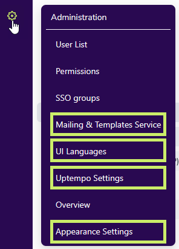
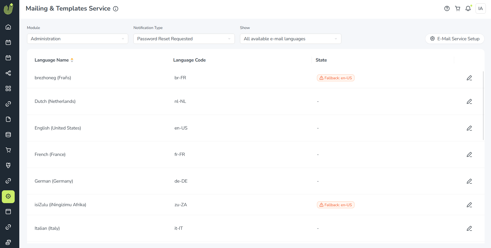
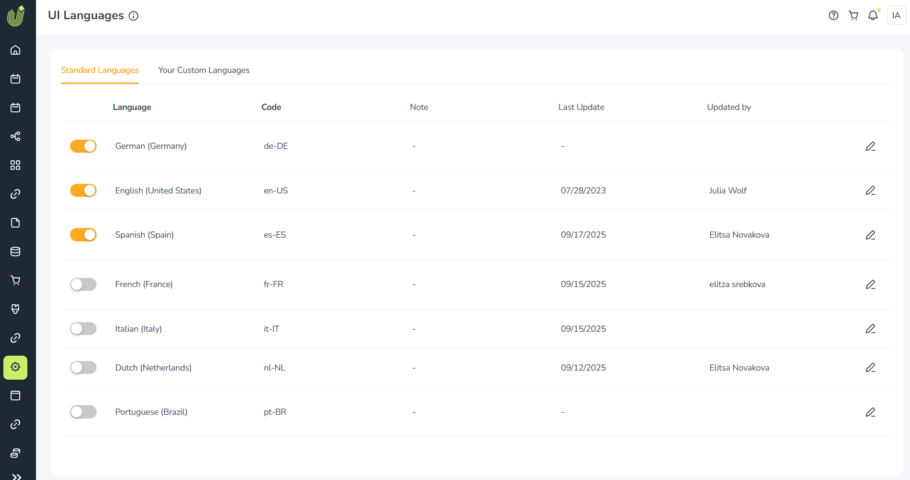
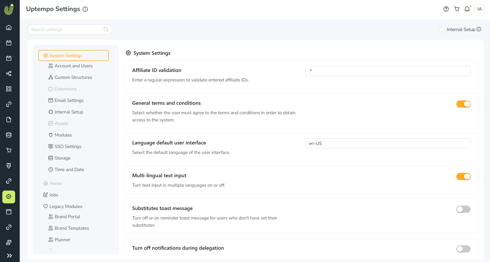
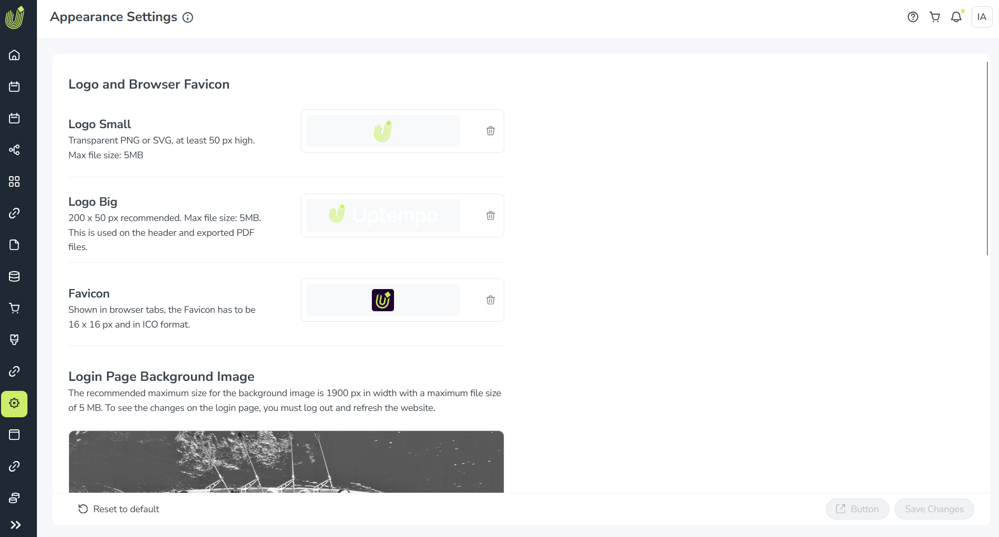

Announcement: New Uptempo administration settings pages
What's new & changed
We've migrated several settings pages from the legacy BrandMaker platform to the Uptempo platform. To do this, we've moved the affected settings pages out of the Administration > Overview section, and moved them into four new pages in Uptempo's Administration menu:
Mailing & Templates Service
UI Languages
Uptempo Settings
Appearance Settings

As part of migrating these pages, we also reworked their design to match the overall style and color scheme of the Uptempo platform, and made several user experience improvements, including reorganizing the page layouts for easier navigation.
Here's an overview of the new Uptempo administration settings pages and what's changed on each one:
Mailing & Templates Service
Previous names: E-mail Templates and E-mail Service
Previous locations: Administration > Overview > Look & Feel > E-mail Templates and Administration > Overview > System Configuration > E-mail Service
What's on this page: Settings related to email notifications that the Uptempo platform can send to users when certain system events happen.
What's changed: Combines two related settings pages into a single page for convenience. Redesigned and reorganized for improved usability.
{kind=link}

UI Languages
Previous name: UI Languages (no change)
Previous location: Administration > Overview > Look & Feel > UI Languages
What's on this page: Settings to select and customize the user interface languages of Uptempo Work modules.
What's changed: Redesigned and reorganized for improved usability. Some former default languages have been removed as previously announced (see the deprecations and discontinuations pagefor details).
{kind=link}

Uptempo Settings
Previous name: System Settings
Previous location: Administration > Overview > System Configuration > System Settings
What's on this page: General system settings and module-specific settings for Uptempo Work modules (including legacy modules).
What's changed: Completely redesigned and reorganized, with all settings now grouped into subsections for improved navigation. All settings now also have user-friendly names and a brief description to make them easier to understand and use.
{kind=link}

Appearance Settings
Previous name: Appearance Settings (in some cases Desktop Skinning)
Previous location: Administration > Overview > Look & Feel > Appearance Settings
What's on this page: Settings to customize the visual design of the Uptempo user interface.
What's changed: Redesigned and reorganized for improved usability.
{kind=link}
